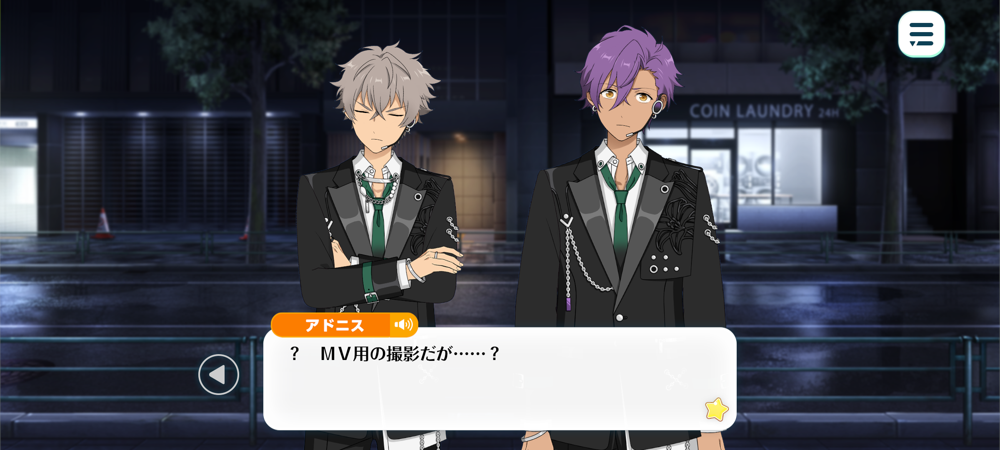
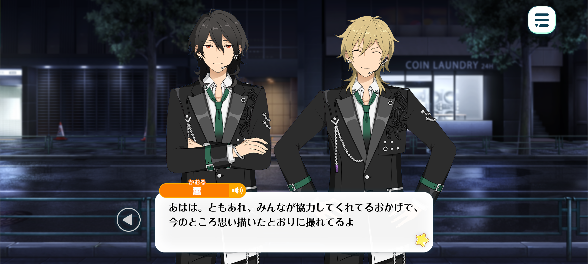
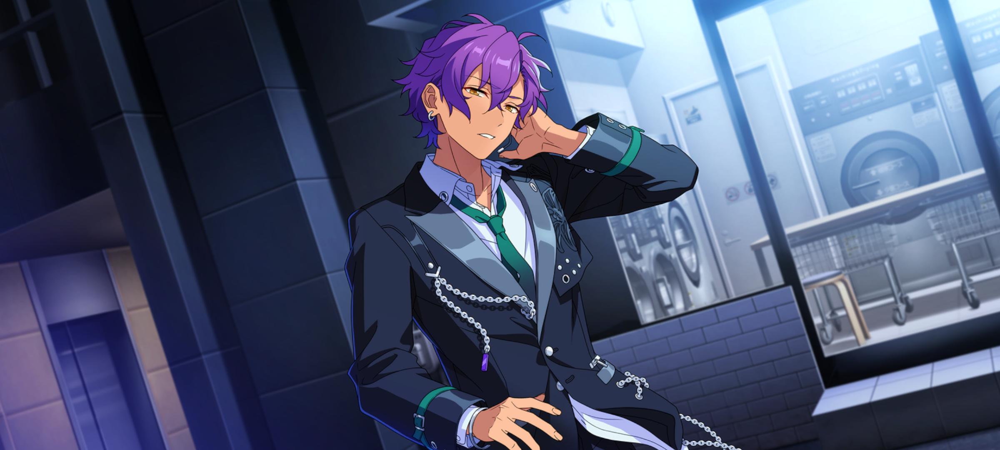
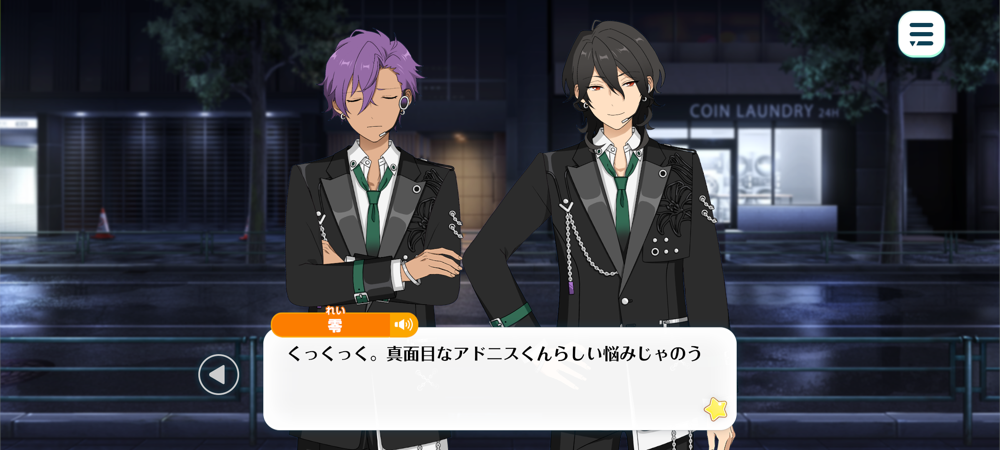
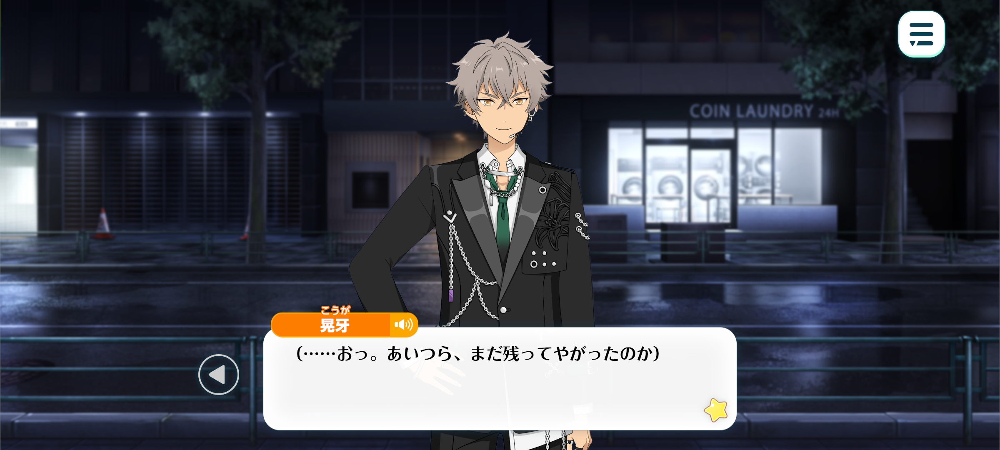
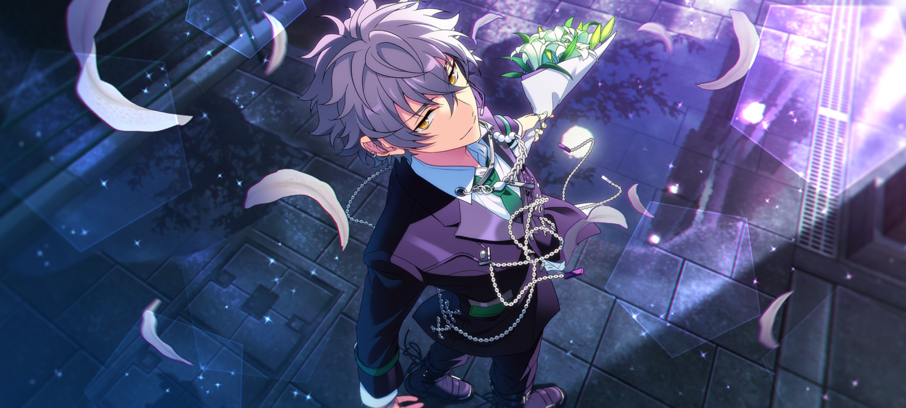

In Memoriam◆Handwriting, Chasing, Rambling
Epilogue


Time: The day of the RAMBLING MOON MV shoot

Koga: —Fuck this! This is shite!
Adonis: ? The shoot for the music video…?
Koga: GraaH! That’s not what I mean!
Kaoru: Koga-kun, Koga-kun. You can’t start complaining the very moment the director says ‘cut’.
Koga: Shut up! I wanna be playin’ or singin’ somethin’! Anythin’!
I’m jus’ walkin’ back ‘n forth, strikin’ poses that’re supposed to look all deep ‘n shit… It’s too much like a proper music video, it’s makin’ me cringe!
Kaoru: Too much like a proper MV? I can’t tell if that’s a compliment or an insult.
Rei: Kukuku. Koga’s feeling all shy
Koga: I’m not fuckin’ shy! Stop sayin’ random shit!
Rei: Hey now, cease prodding me with your bouquet. You’ll get pollen all over my suit.
Though, I suppose I can understand how you’re feeling.
Kaoru-kun’s big moment is him walking down the stairs whilst looking effortlessly cool.
And mine is tossing an empty can into a bin without even looking.
I’ve been practising, you see, but my success rate is only about fifty percent so I’m beginning to worry about the actual performance.
Adonis: Fifty percent is quite high.
Koga: Yeah, man. You’re a vampire. Shouldn’t you be able to do it with your eyes closed?

Kaoru: Uhuh! You’re the Demon King Sakuma Rei! You’ve gotta nail it on your first try ♪
Rei: Who on earth do you two take me for…?
Kaoru: Ahaha. Anyway, thanks to all your hardwork, everything’s going exactly as I’d envisioned.
If we keep this up, this’ll make for one hell of a music video.
Adonis: Ah yes, Hakaze-senpai came up with the storyboard for this video.
Kaoru: Yup! I figured that if we were gonna shake things up with the kind of song we made, it’d be refreshing to do the same with the music video.
I’ll leave the camerawork and finer details to the professionals, of course.
But I listened to the song Koga-kun made again and again, and put quite a lot of thought into it. Think of it as a present from me to you and accept it gratefully.
Koga: Present my ass. I’m the one doin’ all the hard work!
Kaoru: Ahaha ♪ Well, do your best for me.
The harder you work, the better the video’ll turn out, Koga-kun. And that’ll make the fans even happier.
So just bare with me, ‘kay?
Koga: …Tch. Whatever, man.
Adonis: Fufu. For all his complaining, Oogami always give it his all. That’s one of things I admire most about him.
…Ah. I think my scene is next. I’ll be back in a moment.
Kaoru: Yup! Good luck!
Adonis: …
(...How long must I stand like this for?)
(I was instructed to “remain still and pretend as though I were lost in thought.” Acting solely through facial expressions is rather difficult.)
(Lost in thought…)

(Oogami must have had a great deal on his mind lately.)
(I cannot begin to comprehend all the pain and regret he must have been carrying.)
(And yet…people can still move forward, even whilst carrying such burdens. Listening to the song Oogami wrote, I can feel that much within it.)
(But… what if none of it had ever happened…?)
Rei: —kun… Adonis-kun.
Adonis: …? Is something the matter, Sakuma-senpai?
Rei: Whatever do you mean? The director gave us the all-clear some time ago. Just how long did you intend to remain standing there?
Adonis: Ah…my apologies. I became a little lost in thought.
Rei: Did you, now? And what, pray tell, occupied those thoughts of yours?
Adonis: ...Oogami, mostly.
Listening to this song, I can feel the emotions he has poured into it.
Yet... when I think about it, I find myself conflicted.
Would it not be preferable if such a tragedy had never occurred in the first place? And yet, had Oogami never learned of MARBLING’s passing, this song may have never come into being.
The more I think about it, the less certain I become of what I ought to feel.

Rei: Kukuku. A rather Adonis-kun train of thought.
However, you needn’t choose between one feeling and the other.
It is tragic that he died. And yet, it is also beautiful that this song was born from the ashes of that tragedy. Two truths do not contradict one another, Adonis-kun. Both may exist within the same heart. Isn't that rather wonderful?
Our emotions were never meant to be sorted so neatly into this or that.
Besides, it was not sorrow itself that gave way to this song. Sorrow may have been where Koga began, but what he made of it— that belongs to him. He suffered. He grieved. And then, of his own accord, he took all of that and created something new.
So let us cherish what Koga has given us. Let us accept it for what it is, not merely a song born from grief, but as something he chose to make with his own hands.
Adonis: ...Yes, I understand now.
I, too, will treasure this song.

Koga: (...I can’t believe those guys are still here.)
(I knew the kids from the band contest were gonna come and watch us, but…)
(They’ve been here since this morning. I’m amazed they ain’t bored of us yet.)
(...Haha. What’s with that look in their eyes?)
(They’re watching us film like they’ve been glued to the floor. Just like I was.)
(That’s how I used to look at gramps.)
(Some guy with greyin’ hair, singin’ in a language I couldn’t understand. I didn’t even know his name.)
(Yet the moment he strummed his guitar, I couldn’t look away.)
(I didn’t even wanna blink, in case I missed somethin’. I was completely obsessed with chasin’ that sound.)
(...Ah, I think I get it now.)
(Just like I looked at gramps— they’re lookin’ at us the same way.)
(And someday, when they’ve grown up and start playin’ their own music—)
(I’m sure some kid’ll be watchin’ them, too.)
(Eyes shinin’. Desperate not to miss a single moment of their song. Chasin’ after every note, every step.)
(And then it’ll happen all over again.)
(Even when you’re gone, your music doesn’t have to die with you.)
(Someone, somewhere, hears it… and it makes them wanna create somethin’ of their own. And then they pass it on to somebody else. And somebody else after that.)
(Right, gramps? Your music’s still here.)
(I’m holdin’ on to it. And I’ll keep carryin’ it forward…)
(...)
(...I’ll probably regret that for the rest of my life.)
(That day. Stubbornly refusin’ to go to his show over somethin’ so damn stupid.)
(I guess some regrets jus’ don’t fade.)
(But regret ain’t the only thing that’s left inside me.)
(That pain I felt… that feeling like someone had reached into my chest, ripped my heart out, and stomped it into the dirt…)
(His music. His voice. That longing I felt when I first heard him play. It’s all part of me. It’s in my veins. It made me into who I am today.)
(So now, it’s my turn to sing.)

...You’re listenin’ somewhere out there, aren’tcha gramps?
I’m nowhere near ready. Not by a long shot.
But I’m gonna get even bigger, I’m gonna make the sickest music there is—
And someday. I’ll make a sound so damn loud you’ll be able t’hear it all the way up in heaven…♪